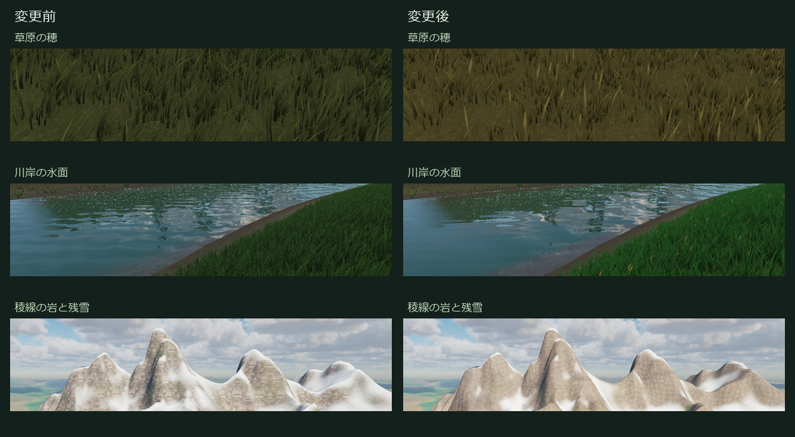
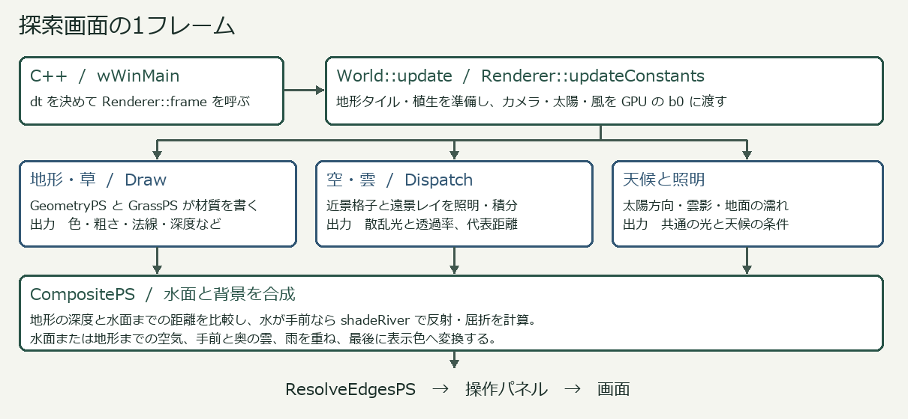
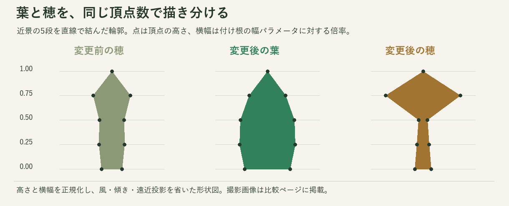
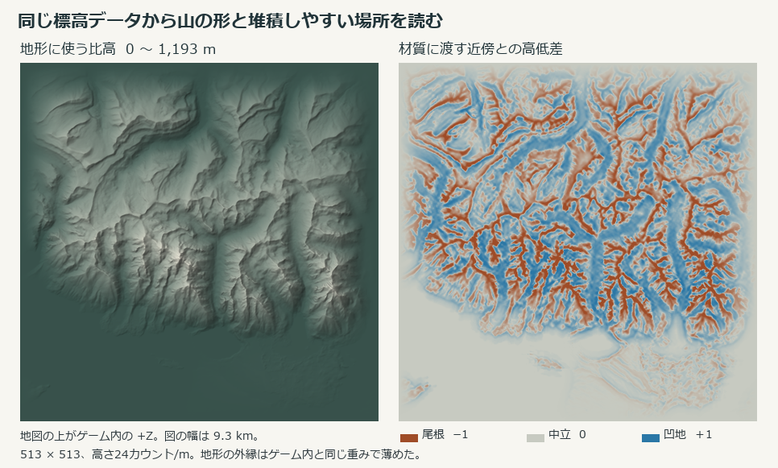

目次 草・水・山と雲のプログラム解説
撮影位置で試す 画面で確認する 採用版での確認結果
地面の1画素を、C++から画面まで追う
CPUからGPUに渡る値を一つ見る 草と山が共有するG-buffer 川と雲を合成する順序 Visual Studioでたどる
雲の先端の形が、1本の視線の色になるまで
1．風で曲がる位置を決める 2．厚い房とほどけた先を作る 3．雲の中で光を積算する 4．ちらつきを直す場所を選ぶ
草原のプログラムを株から画素まで追う
C++が地形を渡す 同じ頂点列から、葉と穂ができる 一本の葉と地面の風をそろえる 遠さで省くもの、影に残すもの
川岸から見る流れと、浅い水の下の砂利
C++ で掘った川が画面に届くまで 曲がった川で波を運ぶ 砂利が水を通して見える理由 岸から確かめる 流れが折り返す瞬間を数値で確認する
山のプログラムを読む
1. C++で実測地形を読み、尾根と谷を判定する 2. 地形タイルからピクセルシェーダーへ値を渡す 3. 岩、崖の下の石くず、残雪を描き分ける 4. 歩いている高さとの関係 5. 山腹と残雪を別の視点で確かめる
草・水・山と雲のプログラム解説
同一視点の変更前後を切り替える · 全章を続けて読む
読みたいこと
本文
入口になる関数
C++が描画の各段をどう動かすか
地面の1画素を追う wWinMain → Renderer::frame → CompositePS
風が積雲の先端をどう曲げるか
密度・照明・再投影 bendConvectiveTop、traceCloudRay、reprojectCloudAA
草の株から葉と穂をどう描くか
草の配置と頂点 GrassField::select、GrassPlacementCS、GrassVS
川床の上に流れる水をどう重ねるか
水の流れと屈折 riverSurfaceDistance、riverSurface、shadeRiver
残雪が尾根と窪地をどう見分けるか
標高から山の材質へ buildRidgeLandforms、World::buildTile、GeometryPS
岩写真を縮めると格子が目立ち、遠くの写真を消すと岩の細部も失われた。山の章では、同じ岩壁の原寸切り出しで2つの試作と採用版を見比べられる。 岩壁の4案 · 3箇所で測った繰り返しの強さ
撮影位置で試す
Visual Studio の CirrusEngine.sln を Release | x64 でビルドする。ソリューション直下で次を実行すると、その地点を歩いたり飛んだりできる。時刻付きの例は時計を止め、雲や水面の動きは通常どおり進む。 ソリューション
.\out\vs\Release\CirrusEngine.exe --camera walk --spawn 6 -66 --look 18 -17 --weather partly --time 16.2 --day-seconds 0
.\out\vs\Release\CirrusEngine.exe --camera walk --spawn 53 25 --look -25 -14 --weather partly --time 16.4 --day-seconds 0
.\out\vs\Release\CirrusEngine.exe --camera fly --spawn 240 3320 --look 6 20 --no-vegetation --weather clear --sun-elevation 39 --sun-azimuth -52
画面で確認する

草は手前の茎と穂、水は川岸から見下ろした波と川底、山は岩壁を分ける溝と残雪に注目する。画像比較ページは各視点の幅1920画素の画像を重ねて表示する。比較境界はキーボードの矢印でも動かせる。 同じ視点を比較する
乾いた草原の撮影位置では、GPUが選んだ根元は近景13,405株、中景17,771株、遠景41,190株。葉と穂の違いは同じ根元から頂点を作る段階に現れる。山腹のカメラの高度は220.38 m、稜線を望むカメラは1,453.32 m。高さによって岩の写り方がどう変わるかも見比べられる。 使ったソースの比較用ハッシュ
比較の両側で --width 1920 --height 1080 --quality high --frames 10 --fixed-dt 0.0166666666666667 --no-ui --headless --debug-layer を使用した。草・川・谷は partly、山腹と稜線の専用視点は clear。撮影条件・画像差・D3D11の診断結果は機械可読の記録にも保存している。採用版は通常の Release 実行ファイルに --shader-dir で確定した一式を渡して撮影した。参照したシェーダーと通常起動先のシェーダーは全ファイルをハッシュで照合した。平均RGB差は見た目がどれだけ動いたかを示す表示階調で、リアルさや描画速度を評価する得点には使えない。 検証記録 · 元の雲の観察と4K比較
原寸PNG・ログ・カメラの診断JSONを保存した環境では、以下で同じ数値と図版を再生成できる。Python の NumPy と Pillow、およびWindowsのメイリオを使用する。 集計と図版作成のコード
python docs/landscape-study/checks/measure-landscape.py captures/landscape-study/20261122 captures/landscape-study/recomputed
採用版での確認結果
Visual Studio の Release x64 と通常起動用のCMakeビルドが完了した。RTX 5080で撮った6視点と水面マスクは変更前後ともD3D11のエラー・警告が0件、レポート上の非有限値が0件だった。川岸の同じ291,110画素で水面同士を比較できる。全画面のうち、葉が水面を隠す境界は比較から外した。ブラウザーで6視点の切り替えとスライダー操作を確認した。
CTest は既存4件が通過。天候、特殊雲の設定、雲の制御ボリューム、HLSLコンパイルを確認した。HLSLの検証は描画と並行した試行で120秒の上限に達し、撮影終了後の最終実行では117.33秒で通過した。
目次に戻る
地面の1画素を、C++から画面まで追う
川岸を歩いたとき、目の前の草と遠くの山は同じ太陽で照らされる。その下の川は、すでに描いた地形の深度を使って、水に覆われる場所だけを塗り替える。この順序は Renderer::frame に集まっている。以下の関数名は Visual Studio の「ソリューション全体を検索」でも探せる。 フレームの実装 · Windowsの入口

CPUからGPUに渡る値を一つ見る
wWinMain がフレームの経過秒数を決め、engine->frame(dt, ...) を呼ぶ。探索時は World::update がカメラの周囲のタイルと植生を用意し、Renderer::updateConstants が現在と前回のカメラ、太陽、風、材質の描画設定を FrameData に詰める。次の抜粋では GPU が読む領域へ構造体をコピーし、同じバッファを頂点・ピクセル・コンピュートの各段のスロット0へ結び付ける。 CPUのFrameData · GPUのcbuffer Frame
std::memcpy(mapped.pData, &constants_, sizeof(constants_));
context_->Unmap(frameBuffer_.Get(), 0);
ID3D11Buffer *cb = frameBuffer_.Get();
context_->VSSetConstantBuffers(0, 1, &cb);
context_->PSSetConstantBuffers(0, 1, &cb);
context_->CSSetConstantBuffers(0, 1, &cb);
直前の Map(..., D3D11_MAP_WRITE_DISCARD, ...) で今回の書き込み先が得られる。HLSL側の cbuffer Frame : register(b0) がこのバッファを読む。草が曲がる向きと雲の移動を調べるときは、WeatherEffects.yz が風速、Wind.xy が積算した移動量であることに注意する。単位が m/s と m なので、同じ方向でも使い道が異なる。 定数の書き込みと束縛 · Microsoftによる定数バッファの説明
草と山が共有するG-buffer
草は GrassPS、山肌は GeometryPS が材質を作る。どちらも encodeMaterial を通る。ここでは影付きの完成色を焼かず、照明時に必要な値を3枚へ分ける。例えば草の表裏の法線を変えると2枚目が変化し、後の照明で葉の明暗が変わる。 草のシェーダー · 地形と照明 · G-bufferの定義
出力
RGB
A
SV_Target0線形アルベド
粗さ
SV_Target1ワールド法線を0～1へ変換
金属度
SV_Target2自己発光
材質の遮蔽率
地形の実寸の位置は深度と逆ビュー射影行列から復元する。surfaceLighting が材質と太陽、雲影、周囲光を組み合わせる。同じ法線画像でも、午後から夕方へ時間を進めれば山の岩壁や草の陰の落ち方が変わる。 地形から最終照明まで
川と雲を合成する順序
drawGeometry(false) が不透明な地形・草木の材質と深度を確定する。地形と草の影はこの前段で別の視点から描く。CompositePS がカメラから不透明面までの距離を opaque として得る。riverSurfaceDistance(ray, opaque) の結果がそれより手前なら、shadeRiver に川床側の照明色と両方の距離を渡す。川が手前なら水面まで、地形なら地形までの距離で空気遠近と霧を評価する。雲の自己散乱光と透過した背景を合成し、その後に雨と表示用のトーンマップを適用する。探索の通常表示では最後に画面の縁もフィルタする。 合成のHLSL · 川を描く関数
Visual Studioでたどる
CirrusEngine.sln の Release | x64 をビルドする。起動引数に --camera walk --spawn 53 25 --look -25 -14 --time 16.4 --day-seconds 0 を入れると川の比較位置に立てる。Renderer::updateConstants にブレークポイントを置くとCPU側の constants_.sunDirection などが確認できる。GPUの出力は F3 の一覧の GBUFFER NORMAL、GBUFFER ROUGHNESS、RIVER SURFACE を順に選ぶと、法線・粗さ・水面判定を最終色と照合できる。 ソリューション · デバッグビューの実装
目次に戻る
雲の先端の形が、1本の視線の色になるまで
横から見た雲の先を直すときは、まず密度を参照する3次元の場所を追い、その後で、その場所から何色の光がカメラへ届くかを追う。この順に読むと、輪郭・陰・ちらつきのどれを直しているのか見分けやすい。 雲の共通関数 · 実写と描画の比較
1．風で曲がる位置を決める
unmixedCloudShape はワールド座標 p から積算移動量 Wind.xy を引いて、風と一緒に動く雲の座標を求める。bendConvectiveTop では、強い対流と風があるとき、雲層下部を支点にして、高くなるほど風上へずらした位置の密度を読む。たとえば、変更後の位置 x=110 m から風上の x=100 m の雲を読むと、元の房は画面で10 m風下に現れる。実装では二次元の風向と高度ごとの重みでずれを決め、肩を局所的に回転する。 座標の逆変換と風下の雲頂
2．厚い房とほどけた先を作る
Classicの thermalCoreWeight は、局所的な柱の厚み・被覆率・雲底からの高さ・対流の強さを掛ける。次は実際の補強式で、envelope は細部を削る前の大きな形、coreWeight はこの位置の補強量である。 密度の実装
return lerp(envelope, 1, coreWeight * smoothstep(0.15, 0.53, envelope));
例えば envelope = 0.40、coreWeight = 0.30 なら結果は約0.53になる。空の点（0.00）は0.00のままなので、上空全部が白くなるのを防げる。早期終了に使う upperEnvelope にもこの関数を適用する。細かくサンプリングすれば見える房が、粗い判定で捨てられるのを防ぐためである。
backgroundCloudShape は薄くなる風下側の肩を選び、外気との混合で下がる密度と、上流の雲体から運ばれる少量の密度を合わせる。Cumulus は独自の内部補強を持つため、Classicの補強式は適用しない。輪郭の外側と内側を透過率画像で読むと、光の当たり方を変えずにどこが薄くなったかを確認できる。 密度と透過率の図解
3．雲の中で光を積算する
CloudCS から traceCloudRay に入ると、視線上の距離 t ごとに密度を評価する。照明が必要な点では、lightOpticalDepth または条件を満たした遮蔽キャッシュから太陽側の光学的厚さを取り、shadeCloud に渡す。以下は accumulateCloudSample の色に関わる部分。 視線と光の積分
float weight = accumulated.transmittance * (1 - attenuation);
accumulated.radiance += weight * lighting;
// この後ろにある物体から、カメラへ届く光の割合を更新する。
accumulated.transmittance *= attenuation;
区間の透過率は attenuation = exp(-extinction * ds)。手前までの透過率が0.8、次の区間が0.5なら、その区間からの光の重みは0.4、後続区間へ残る透過率も0.4。手前の雲を厚くすると、同じ場所の背後にある山も暗くなる。近景は LightNearCloudCS と IntegrateNearCloudCS で視錐台格子を照明・積分する。最後に near.rgb + near.a * far.rgb の順で重ねる。 近景と遠景の合成
4．ちらつきを直す場所を選ぶ
TemporalCS はチェッカーボードで直接計算しなかった画素を再構成する。CloudAntialiasCS は雲色と透過率をさらに安定化する。後者の reprojectCloudAA は代表距離から3D位置を作り、前の風とカメラを考慮して過去の画面座標に戻す。過去に地形が手前だった画素や雲の距離が合わない画素を除き、残りの履歴を現在の近傍の色域に収める。山や草の輪郭だけがぶれる場合は、地表の最終フィルタ ResolveEdgesPS も別に確認できる。 雲の再構成 · 雲の専用TAA · 最終画面の縁フィルタ
目次に戻る
草原のプログラムを株から画素まで追う
歩くカメラの足もとで、背の低い緑の葉と、そこから突き出す黄褐色の穂が一緒に揺れる。今回手を入れたのは、GPUが一枚の葉を立ち上げる形と色、そして草原を横切る風の波だ。川に近い所では普通の葉が高く育ち、乾いた所では葉先が色づき、穂が増える。
C++が地形を渡す
Renderer::frame がカメラ位置を World::update に渡す。カメラが64 mのセルをまたぐか地形タイルが更新されると、World::updateGrassHeight が歩行地形の表面を4 m間隔、193×193点でサンプリングする。地面からカメラまでの高さが120 m未満のときに草の近景描画が有効になる。world.cpp · world.hpp GrassField::setTerrain が高さを1画素1個の32ビット浮動小数テクスチャに転送する。GrassField::select はカメラを中心に3段の配置格子を作り、各段の原点・間隔・距離を定数バッファ b4 に渡す。前回と同じ視点行列・シェーダーなら、生えている株のリストを再使用する。高さの更新時には再選択が必要になる。grass.cpp GrassPlacementCS は8×8スレッドで候補地を走査する。セル座標のハッシュで根の位置を少しずらし、地形の三角形と同じ対角線で高さと勾配を復元する。水際の水没地点、急斜面、踏み跡では間引く。残った株だけを SelectedGrass.Append(site) で記録する。grass.hlsl
各株のデータは計32バイト。根の世界座標3成分の後に、株の種となる整数、地面のX・Z勾配、湿り具合、水際からの近さが続く。湿り具合は世界座標の大小二つの模様を滑らかに混ぜた値で、水際からの近さは川の形から別に求める。乾燥・湿潤の区画はカメラを戻すと元の位置に現れる。配置に使う共通関数
同じ頂点列から、葉と穂ができる
GrassVS は SV_InstanceID で株を、SV_VertexID で株の中の何枚目、何段目、左右どちらの縁かを選ぶ。近景の葉には高さ方向に5段ある。根を0、先端を1とする高さ t に応じて各段の幅を変え、左右の頂点を結ぶ。CPUは既に選んだ株数を CopyStructureCount で描画引数に移し、DrawIndexedInstancedIndirect を呼ぶ。CPUが毎フレーム葉の頂点を一枚ずつ書き換える処理は要らない。GPU側の頂点生成 · C++側のインデックスと間接描画

従来の穂は普通の葉を土台にし、高さを決める同じ乱数が小さいと穂になった。このため、穂を選ぶと元の葉の背丈まで小さい側に偏った。今回の GrassVS では、株内の最初の2本を穂の候補とし、選択と背丈に異なるビット列から得た値を使う。各候補が穂になる確率は湿った区画で8%、最も乾いた区画で38%。これとは別に、普通の葉の背丈と幅、葉先が枯れ色になる程度に湿り具合を反映する。ここでの「湿り」は地形上の植生分布で、雨で葉が濡れる度合いは WeatherEffects.x が別に担当する。
形を変更するときの入口は leafProfile と culmProfile。普通の葉は下から中ほどに幅がある。穂の形は細い稈に、上部のふくらみを加えて作る。次は実装にある2つの式である。
float ear = smoothstep(0.49, 0.71, t) * (1 - smoothstep(0.76, 1.0, t));
float culmProfile = 0.23 * (1 - t) + 0.98 * ear;
t=0 の横幅倍率は0.23、t=0.75 では約1.04、先端では0。近景の5段は0、0.25、0.5、0.75、1を通るので、上側のふくらみが三角形の輪郭に現れる。葉は高さに応じて幅方向の軸も少し回す。根に芯が残り、先端へ向かうほど葉の面がひねられて、左右の縁が違う方向から光を受ける。
一本の葉と地面の風をそろえる
天候側は風速を時間積分して、世界のX・Z方向に風がどれだけ進んだかを保持する。Renderer::updateConstants は積算移動量を Wind.xy に、現在の風速を WeatherEffects.yz に入れる。草と地面のどちらも meadowGust を呼ぶ。ここでは p - 0.58 * Wind.xy の位置の波を評価するため、静かな瞬間にカメラだけを動かしても風の模様は地面に残る。weather.cpp · 定数を書き込む箇所 · 風の関数
広い波が二つの細かい波の位相をずらし、現在の風向に合わせて二つを混ぜる。風向の変更でも世界全体の波の座標軸は回転しない。草側は風による変位に t*t を掛ける。根では変位0、中ほどでは先端の4分の1になる。離れた場所では地面の GeometryPS が同じ風の値で下草の明暗を弱く動かす。風が谷を進む方向を近景の葉と遠景の地表でそろえる役割がある。草の頂点 · 地形の画素
遠さで省くもの、影に残すもの
株の段
候補格子の間隔
1株の葉×頂点の段
1株の三角形
切り替わりの範囲
近景
0.25 m
12枚×5段
84
22～35 mで中景へ
中景
0.50 m
6枚×4段
30
86～123 mで遠景へ
遠景
0.98 m
4枚×3段
12
246～310 mで消える
近景と中景には穂が立つ。遠景は太めの葉で面積を確保し、草の格子の先には下草の地表色が続く。段の切り替えではセルごとの固定乱数と距離の重みを比較して株を減らす。今回も各段の候補数、三角形数、株データの大きさは同じ設定を使う。変形や風を評価する頂点演算は増えており、三角形数だけからGPU時間を換算することはできない。LODの実数値
距離の切り替えでは、各段がそれぞれの格子から別の株を選ぶ。歩いて距離境界を越えると、一株ずつ出入りすることがある。穂を決める乱数は時刻に依存しない。一方、幅2.5 cmの穂を深度30 mで真正面から見ると、垂直画角62°・720pで約0.50画素しかない。この大きさでは風や視点の移動で画素を横切り、明るさが変わりやすい。雲専用のTAAは地形や草のG-bufferの描画後、雲バッファに対して働く。
GrassShadowVS は GrassVS と同じ位置計算を呼ぶ。草影が有効な場合、色を描く前に足もと44 m四方の1536×1536深度マップへ近景の株を投影する。曲がった葉と影が同じ風に追随する。色描画では GrassPS がアルベド・粗さ・法線・遮蔽を書き、近景だけ葉脈テクスチャも参照する。encodeMaterial の最後の引数 -ao は、後段の surfaceLighting で葉の透過光を有効にする符号でもある。最終的に地形上へ落ちる草影、草そのものが見せる根元の暗さ、逆光の葉先はそれぞれ別の計算から届く。影の描画順 · G-bufferの格納先 · 透過光と影の合成
目次に戻る
川岸から見る流れと、浅い水の下の砂利
川岸で下を見ると、砂利が水を通して見える。視線を対岸へ向けると、草木や空の映り込みが水面を占める。今回手を入れたのは、映った景色を揺らす波の向き、浅い流れで波が細かくなる位置、川底をのぞいたときに見える砂利の位置である。
C++ で掘った川が画面に届くまで
読む順
関数
入力と出力
1
World::terrainHeight → World::buildTile地表の各 (x, z) で川筋までの距離を求め、浅瀬や砂州を含む河床の高さを決める。これが不透明な地形メッシュになる。
2
GeometryPS地形メッシュに砂利の色と法線を当てる。あとで同じ画面位置から川底の深度と材質を読める。
3
Renderer::updateConstants → Renderer::frameCameraTime.xyz に視点、.w にシミュレーション秒、WeatherEffects.yz に風の速度を渡す。全画面三角形に CompositePS を適用する。
4
CompositePS → riverSurfaceDistance画素ごとの視線と勾配付き水面の交点を取る。水が不透明な地形より手前にある画素で shadeRiver を呼ぶ。
5
shadeRiver → riverSurface早瀬の波と泡、水を通して見える川底、岸と空の映り込みを求める。合成に戻り、カメラまでの空気・霧・雲を通す。
地形と水面が共有する高さは riverLevel(z) = 123.4 − 0.0022 × z m。1 km下流へ行くと2.2 m下がる。交点までの距離は (riverLevel(camera.z) − camera.y) / (ray.y + 0.0022 × ray.z)。C++とHLSLの両方から同じ河道定義をインクルードしている。河道の定義 · 地形タイルの生成 · C++のフレーム処理 · 水面との交差 · 地形描画と最終合成
曲がった川で波を運ぶ
riverSurface は下流方向の座標を z、横方向を x − riverCenter(z) とする。同じ横座標をたどって下流へ進むと、蛇行しながら同じ岸に沿って移動する。岸から離れるほど流れが速くなり、狭い区間でも速くなる。水面上を移動するノイズの計算は次の部分にある。水面シェーダー
float phaseA = frac(CameraTime.w / period);
float phaseB = frac(phaseA + 0.5);
float blendA = 1 - abs(2 * phaseA - 1);
float u = p.z - meanSpeed * CameraTime.w;
float2 drift = (float2(phaseA, phaseB) - 0.5) * period * (speed - meanSpeed);
u は平均0.84 m/sで模様を運ぶ。局所速度と平均速度の差だけを drift で加える。これを無期限に積算すると、岸から川の中央に向かって模様が時間とともに引き延ばされる。そこで3.2秒周期の座標をふたつ、半周期ずらして同じ3Dノイズを読む。Aが初期位置に戻る瞬間にはAの重みがゼロ、Bが戻る瞬間にはBの重みがゼロになる。この二相の考え方はValveの水流の発表でも解説されている。ここでは川幅と岸からの距離で局所速度を決めている。Valve・Water Flow in Portal 2
川幅が狭く、水深がおおむね0.3～0.75 mで、岸から離れている地点では riffle が強くなる。ここに短い斜めの波を混ぜ、泡は流れていくノイズの山にだけ現れる。深い流れには長い波が残る。川の横座標は蛇行に従っているので、法線をワールド座標へ戻す際には河道中心線の勾配も使う。細波が遠方で画素より小さくなるときは、視線の浅さ、画面の高さ、水面までの距離から画素が覆う水面の幅を見積もり、周波数ごとに法線の振幅を弱める。
砂利が水を通して見える理由
shadeRiver には元の画素で見えた地形までの距離と、水面までの距離がメートルで届く。ふたつの差は斜めの視線に沿う長さで、岸の浅さを測るには長すぎることがある。そこで水深の推定値 column と水中の光路長 path を別に持つ。水深は距離差に max(0, −ray.y − riverGrade × ray.z) を掛けて求める。勾配に平行な川底なら、この換算はその地点の鉛直水深と一致する。
水面から4.5 m未満の推定水深、カメラから155 m未満では、refract(ray, normal, 1 / 1.333) で水中の方向を作る。水中レイを推定した底まで進め、到達点をカメラに投影する。その画素で実際の深度からワールド位置を復元し、予測点と近く、水中の河道内にある場合に川底の色と光路長を更新する。たとえば平坦な水面に法線から70°で入るレイは、水中で約45°へ曲がる。水深1.5 mなら、水中を進む距離は約2.1 mである。HLSL の refract
水を通る距離が増すほど赤い光が先に減る。コードの absorption は光路長を使ったRGBの透過率で、T = exp(−float3(0.56, 0.24, 0.19) × path)。水中から届く色は bottom × T + scatter × (1 − T) になる。そこへフレネル係数 0.0204 + 0.9796 × (1 − N·V)^5 に応じて反射を混ぜる。見下ろすと川底がよく見え、視線が水面に平行になると空と対岸が強く映る。屈折・吸収・反射の実装
岸から確かめる
リポジトリ直下で次のコマンドを実行すると、対岸と川底を同じ画面内で見られる。
.\out\vs\Release\CirrusEngine.exe --camera walk --spawn 53 25 --look -25 -14 --time 16.4
水の範囲だけを調べる場合は同じコマンドに --debug-view 31 を加える。白い範囲は深度テストで水面が地形より手前になった画素。草や石が手前にあれば、その形で水面が切れる。デバッグ表示の選択
水面の交点は一定勾配の平面で、波はその照明法線を変形する。対岸の反射と屈折には画面内に描かれた物体の深度を使う。投影位置が画面の外、草木の上、予測した河床から離れた位置に来た場合は、元の画素の川底へ滑らかに戻す。水門による水位の変化、岩の裏にできる渦の移動、集光による川底の光模様を動的に解くには、流体や光を追う別の入力が必要になる。
流れが折り返す瞬間を数値で確認する
二相の片方の座標が周期の先頭へ戻る瞬間は、その相の混合重みが0になる。波用の連続な試験信号を使い、161地点、4種類の局所流速、41回の半周期境界でCPU上の式を検算した。境界の左右をそれぞれ0.001秒、0.0001秒、0.00001秒ずらして比較すると、最大の色差は0.01323、0.001323、0.000132と小さくなった。これは移流と混合の値の連続性を調べた結果で、画面上の反射のちらつきやフレームレートは含まない。 シェーダーの二相移流
目次に戻る
山のプログラムを読む
画面のどこに雪が残るかは、山の高さだけでは決まらない。この山では、標高が同じ地点でも、突き出た尾根には岩が出て、その隣の窪地には雪が残る。地形頂点の高さと、その頂点で使う材質の情報を同じ標高データから作る。

1. C++で実測地形を読み、尾根と谷を判定する
World::World が assets/world/teton-relief.r16 を符号なし16ビットの配列に読み、buildRidgeLandforms を一度呼ぶ。元データは米国ワイオミング州ティトン山地のUSGS標高データ。ゲーム内で回転・縮小した比高を、9.3 km四方、513×513点、1 mあたり24カウントで保存している。格子の間隔は約18.16 m。 読み込みと地形の判定 · 元データと加工手順
各格子点で、東西南北4点の平均と中央の標高との差を取る。急でも一枚の平面になっている斜面は、周囲の平均が中央に戻るので値がほぼゼロになる。尾根は中央が高いので負、谷は低いので正になる。
d4 = 半径4格子の周囲平均 − 中央の標高 約73 mの地形を読む
d12 = 半径12格子の周囲平均 − 中央の標高 約218 mの地形を読む
F = 0.62 × clamp(d4 / 30 m, −1, 1) + 0.38 × clamp(d12 / 88 m, −1, 1)
小さい半径は細い沢筋を、大きい半径は幅のある窪地を拾う。地図中央付近の主峰（XZ = 451, 5214 m）を実データで調べると比高は1,192.875 m、F = −1。図中の青と茶は、この値を材質へ渡す前に色で可視化したもの。ゲームの地面の最終標高には、さらに周辺の丘陵などが加わる。
2. 地形タイルからピクセルシェーダーへ値を渡す
World::buildTile が各頂点で terrainHeight から高さを、周囲の高さの差から法線を求める。材質には sampleRidgeField(ridgeLandforms_, px, pz) で取り出した F を入れる。標高と分類は同じ4点で双線形補間し、実測範囲の外縁では滑らかにゼロへ落とす。タイルが遠くなると頂点間隔が広がるので、最も遠い描画では小さな沢筋ほど見えにくくなる。 頂点生成 · 標高と分類の標本化
float landform = sampleRidgeField(ridgeLandforms_, px, pz);
vertices.push_back({{px, y, pz}, normal, {landform, 0, 0, 0.91f}});
Renderer::drawGeometry が地形用シェーダーを設定し、World::bindTerrainMaterials が草地・土・砂利・岩の7枚を t37 から t43 に結びつける。入力レイアウトの COLOR は浮動小数点4成分で、負の値も通る。探索地形の GeometryVS がこの値を渡すと、GPUは三角形の内部で補間する。GeometryPS は v.material.x を地形分類、v.material.a を乾燥時の基本粗さとして読む。 描画する側 · 受け取る側
3. 岩、崖の下の石くず、残雪を描き分ける
入力
シェーダーの変数
見え方
山の凹凸
hollow = max(F, 0), crest = max(−F, 0)尾根を露岩に寄せ、緩やかな窪地には石くずを集める
幾何法線のY
cliff, snowShelf崖では岩が見え、雪を載せられる傾斜では岩肌が雪に覆われる
幾何法線のZ
snowLine固定した向きの斜面で積雪開始高度を下げる
世界座標
rockPlane, fracture岩壁に数十～百m規模の明暗を加える。細かい粒は岩の写真から読む
雪の被覆
snow色を雪色へ寄せ、露岩の法線の凹凸を最大85%抑える
雪が出始める高さの中心は1,330 m。尾根では最大175 m高く、窪地では最大245 m低くし、方位と既存の地表模様で境界を崩す。そこから下55 m・上85 mの幅で切り替え、さらに斜度を掛ける。たとえば、同じ標高でも尾根の岩と沢に残る雪が隣り合う。雪が積もる過程や融雪の時間発展を計算する部分はなく、固定した雪の分布に時刻ごとの日射と影が動く。 材質と雪の式
岩の色と法線は地面の向きに応じて、XY・XZ・ZYの3平面から投影する。高所の凹地にたまる石くずには、読み込み済みの砂利と岩の明度を使う。湿った地面、露岩、崖の下の石くず、残雪では粗さも変える。encodeMaterial が色、粗さ、法線をG-bufferに書き、surfaceLighting が太陽・雲影・環境光を評価する。色の段階に固定した暗い影を描き込む処理は使っていない。 G-bufferへの格納 · 照明の読み戻し
三角形ごとのサンプルで岩写真の反復を崩す
最初の山腹レンダーでは、岩写真1枚を約77 m間隔で貼ったため、同じ角のある岩が何段も並んだ。約11.5 mに縮めて座標を曲げた案では、遠くの岩壁に細かい斜めの格子が出た。さらに遠景の写真をすべて手続き模様に置き換えた案では、岩の粒が薄れ、閉じた曲線が目立った。採用案は岩写真の一辺を25 m相当にして、写真のどの位置を読むかを場所ごとに変える。 同じ位置から見た岩壁の試作比較
mountainRock は高地の世界座標を約28°回し、三方向に15・18・14 mの振幅で滑らかに曲げる。岩面の向きに合わせ、XY・XZ・ZYの各面に写真を投影する。各投影面の三角格子で、格子の頂点を種にして写真上のずらし量を決める。三角形の内部では3枚のパッチを補間する。対角線の f.x + f.y = 1 では両側の三角形とも重みが (0, f.x, f.y) になる。境界の2頂点とずらし量を共有するので、平滑化して正規化した後も同じ2枚が同じ重みでつながる。 三角格子と乱数の種 · 三方向でのサンプル
頂点ごとの重み = 三角形内の重心座標を smoothstep で滑らかにした値
画素の色 = Σ (重み × 各頂点でずらした写真の色) / Σ 重み
写真と法線には同じずらし量と同じ重みを使う。各パッチの SampleGrad に渡す画面方向の勾配は、ずらし量を加える前の連続した投影座標から計算する。距離に応じてミップを選び、境界で乱数が変わってもミップ幅が跳ねにくい。法線の勾配は変形のヤコビアンの転置で元の空間へ戻す。低地で使う写真の参照は従来の色3回・法線3回。高地は3方向 × 3パッチ × 色・法線の18回、標高260～475 mの遷移域では両方を使う。これらは岩写真だけの参照数である。
三角格子の3パッチは Heitz と Neyret の論文を参考にした。原論文は事前に求めたヒストグラム変換と逆変換で入力写真の分布を保つ。この実装は合計1に正規化した重みで色と法線を混ぜるため、パッチが重なる所では元写真よりコントラストが弱くなる場合がある。 Heitz & Neyret, High-Performance Graphics 2018
4. 歩いている高さとの関係
地形分類は材質用の頂点成分だけに入る。地面の高さを問い合わせる World::ground は近距離タイルと同じ4 m格子・同じ対角線で三角形を補間する。植物の配置には World::surface を使う。地形そのものの高さ、歩行面、川底と水面の位置関係を共有したまま、同じ地点で露岩と残雪の見え方を比較できる。分類用配列の追加メモリは513×513×4バイトで約1.00 MiB。GPUの頂点サイズと地形テクスチャの枚数は同じ。 歩行面 · 描画した三角形の高さ
実データで歩行面を照合した結果
改修前後の valleyRidges、terrainHeight、ground の関数本体を別の名前空間へ取り出し、同じ実測データを入力にMSVC x64の単精度浮動小数点で計算した。格子の節だけで一致しても補間の変更を見落とすので、各セルの中央と偏った位置も調べた。
調べた位置
延べ照合地点数
513×513の全格子点
263,169
512×512の全セルの中央
262,144
各セルの中心を外した2点
524,288
4辺と裾の補間境界、その直前・直後の浮動小数点座標
12,312
川を横切る測線
109,181
合計
1,171,094
3種類の高さの計3,513,282比較すべてで、変更前後の32ビット表現が一致した。各高さの最大絶対差は0 m、非有限値は0件。川の境界などで同じ位置が重なるので、表は照合回数を数えた。 入力ファイルのハッシュと各群の結果 · 比較に使用したC++プログラム
再実行するにはVisual StudioのDeveloper PowerShellを開き、リポジトリのルートから次を実行する。
$sourceFile = (Resolve-Path docs/landscape-study/checks/compare-mountain-height.cpp).Path
$heightFile = (Resolve-Path assets/world/teton-relief.r16).Path
Push-Location $env:TEMP
try {
cl /nologo /O2 /std:c++20 /fp:precise /EHsc /Fe:compare-mountain-height.exe $sourceFile
if ($LASTEXITCODE -ne 0) { throw "ビルド失敗" }
.\compare-mountain-height.exe $heightFile
} finally {
Pop-Location
}
5. 山腹と残雪を別の視点で確かめる
山腹の岩の繰り返しは、谷側から仰角20°で比べると見つけやすい。この画面は手前の尾根が高く、主峰近くの雪が隠れる。
.\out\vs\Release\CirrusEngine.exe --camera fly --spawn 240 3320 --look 6 20 --weather clear --no-vegetation --sun-elevation 39 --sun-azimuth -52
残雪を見るカメラは主峰の北東側（ゲーム内の+X・+Z）に置く。カメラから主峰までの水平距離は約1.62 km、主峰の仰角は約8.7°で、垂直画角62°に収まる。撮影点を選ぶ際は前後各2.5%を除いた視線の160点で、実際の地形高さを標高格子に評価して比較した。視線と地形との間に、格子上の推定で最小約54 mの余裕がある。谷側へ光が差して雪と露岩を追えるよう、太陽方位を5°へ回している。
.\out\vs\Release\CirrusEngine.exe --camera fly --spawn 1261 6617 --look -150 -3 --weather clear --no-vegetation --sun-elevation 38 --sun-azimuth 5
目次に戻る